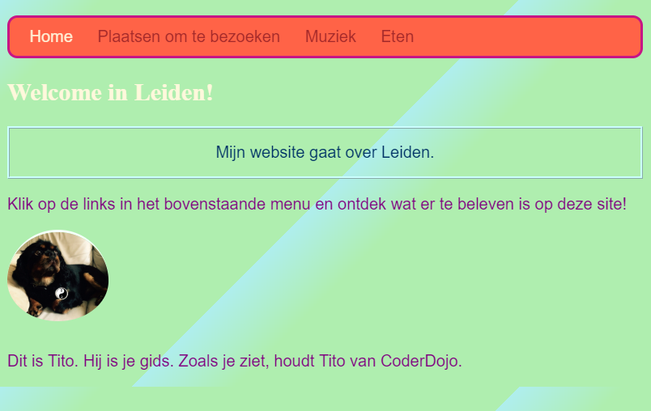

Introductie
Breid je bestaande HTML/CSS-vaardigheden uit om een website te maken en bepaal zelf hoe het eruit ziet.
Wat je gaat maken
Hier is een voorbeeld van hoe je website eruit zou kunnen zien na het voltooien van dit project:

Wat je gaat leren
- Hoe je je eigen kleuren maakt met behulp van code
- Manieren om inhoud op je website te organiseren, zodat je stijlen kunt toepassen en deze vriendelijk kunt maken voor schermlezers
- CSS-stijl gebruiken om thema's te maken en afzonderlijke elementen op te maken
- De grootte van elementen regelen met verschillende soorten maten
- Dingen laten gebeuren als je de muisaanwijzer over elementen op je pagina beweegt
- Animaties maken met CSS
- Ontwikkelaarstools gebruiken om een kijkje te nemen in de code van een website en om delen van je eigen website te testen